บทที่ 28 / 29
ที่ราบสูงเซคิเอ<Indigo Plateau>
❖
มาถึงจุดสุดท้ายของเกมแล้ว ให้เราฝึกโปเกมอน(เอาแบบทุกตัวเลเวล 60ขึ้นไปเลย) และซื้อของเตรียมตัวไว้(โดยเฉพาะFull Restore และ Revive )ผมขอเตือนนิดหน่อยนะครับว่า ห้ามบันทึกเกมในระหว่างการต่อสู้เด็ดขาด เพราะเราต้องสู้กับ 4เทพโปเกมอน(จตุรเทพ) +คู่แข่ง รวม5คนรวดโดยไม่มีการไปฟื้นพลังโปเกมอนเลย ต้องลุยตลอด เลเวลของทุกคนรวมกันแล้วก็53-65 เลยนะครับเมื่อพร้อมแล้ว ก็ลุยกันได้เลย
จตุรเทพคนแรกชื่อคันนะ ใช้โปเกมอนน้ำแข็ง แนะนำให้ใช้โปเกมอนไฟฟ้าจัดการ
จตุรเทพคนแรกชื่อคันนะ
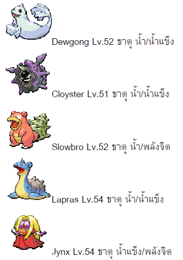
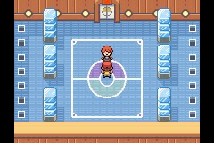
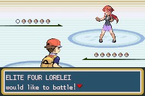
จตุรเทพคนที่สองชื่อชิบะ<Bruno> ใช้โปเกมอนต่อสู้ แนะนำให้ใช้โปเกมอนน้ำและพลังจิต
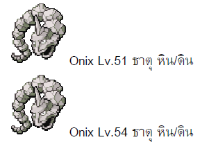
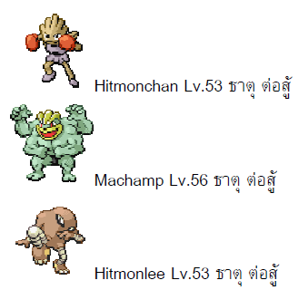
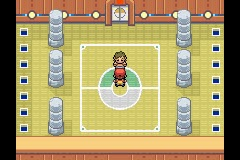
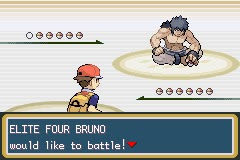
คนที่สามชื่อคิคุโกะ<Agatha> ใช้โปเกมอนผี แนะนำให้ใช้โปเกมอนที่มีท่าของธาตุความมืด หรือพลังจิตเพราะภาคนี้ Gastly, Haunter, Gengar มีความสามารถพิเศษไม่โดนโจมตีโดยธาตุดิน
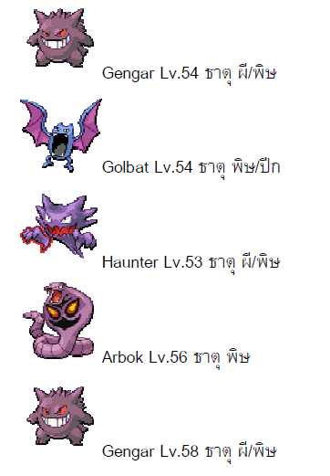
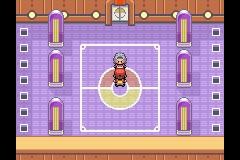
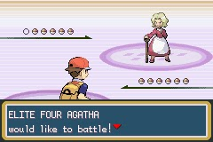
คนที่สี่ชื่อวาตารุ<Lance> ใช้โปเกมอนมังกร ให้ใช้โปเกมอนน้ำแข็งหรือโปเกมอนหิน
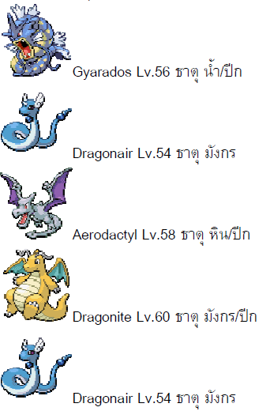
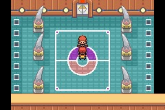
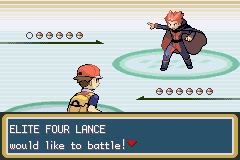
เมื่อชนะวาตารุก็จะบอกว่าเราเป็นแชมเปี้ยนโปเกมอนลีคแล้ว แต่มีคนชนะก่อนหน้านี้แล้วซึ่งก็คือคู่แข่งเรานั่นเอง เข้าประตูต่อไปเพื่อสู้กับคู่แข่ง โดยมีโปเกมอนดังนี้
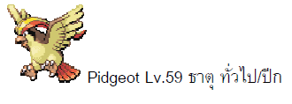
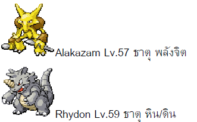